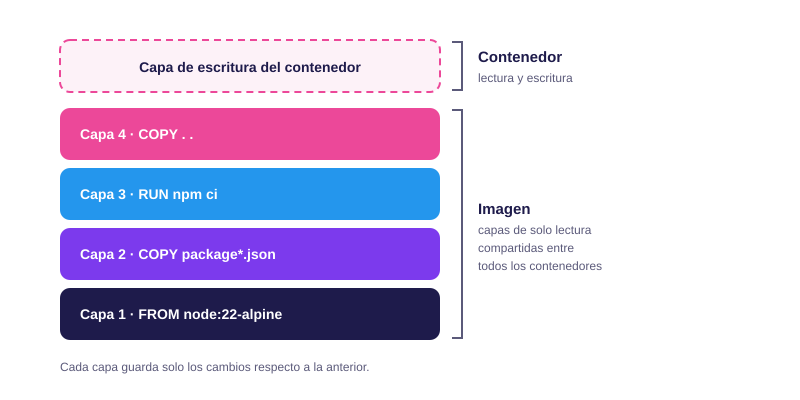

Módulo 03
Imágenes y Dockerfile
Cómo se construye una imagen, por qué importa el orden de las instrucciones y cómo hacerla pequeña y segura.
Imágenes y capas
Una imagen es una plantilla de solo lectura que contiene todo lo necesario para ejecutar una aplicación: el sistema de archivos base, las dependencias, el código y la configuración. Un contenedor es una instancia en ejecución de esa imagen.
Las imágenes no son un bloque único, sino una pila de capas. Cada capa guarda únicamente los cambios en el sistema de archivos respecto a la anterior, y se identifica con un hash SHA-256. Esto tiene dos ventajas: las capas iguales se comparten entre imágenes (se almacenan y se descargan una sola vez) y se pueden reutilizar al reconstruir.

Cuando un contenedor modifica un archivo de la imagen, el cambio se copia primero a su capa de escritura (técnica copy-on-write) y la imagen original permanece intacta. Por eso, al eliminar el contenedor, esa capa y sus datos se pierden, y por eso existen los volúmenes para guardar datos que deben persistir.
El Dockerfile
El Dockerfile es un archivo de texto con las instrucciones para construir una imagen, ejecutadas de arriba abajo. Este ejemplo empaqueta una aplicación de Node.js:
# Imagen base
FROM node:22-alpine
# Directorio de trabajo dentro del contenedor
WORKDIR /app
# Dependencias
COPY package*.json ./
RUN npm ci --omit=dev
# Código de la aplicación
COPY . .
ENV NODE_ENV=production
EXPOSE 3000
CMD ["node", "server.js"]Para construir la imagen y revisar el resultado:
docker build -t miapp:1.0 .
docker images
docker history miapp:1.0El comando docker history muestra cada capa con la instrucción que la creó y su
tamaño. Es muy útil para detectar qué paso hace pesada una imagen.
Instrucciones principales
| Instrucción | Qué hace |
|---|---|
FROM |
Define la imagen base. Toda construcción empieza con ella. |
WORKDIR |
Establece el directorio de trabajo para las instrucciones siguientes. |
COPY |
Copia archivos del equipo a la imagen. Se prefiere sobre ADD, que
además descomprime archivos y puede descargar URLs, comportamientos menos
predecibles. |
RUN |
Ejecuta un comando durante la construcción (instalar paquetes, compilar). Genera una capa. |
ENV |
Define variables de entorno disponibles al construir y al ejecutar. |
EXPOSE |
Documenta el puerto en el que escucha la aplicación. No lo publica: eso se hace
con -p al ejecutar. |
USER |
Indica con qué usuario se ejecutan las instrucciones siguientes y el contenedor. |
CMD |
Comando por defecto al iniciar el contenedor. Puede sustituirse al ejecutar
docker run. |
ENTRYPOINT |
Define el ejecutable principal del contenedor. Se combina con CMD,
que aporta los argumentos por defecto. |
RUN, COPY y ADD
añaden contenido a la imagen. Instrucciones como ENV, EXPOSE,
USER o CMD solo guardan metadatos. Se recomienda escribir
CMD en formato de lista (["node", "server.js"]) para que el proceso
reciba directamente las señales del sistema.
Caché de capas
Al reconstruir una imagen, Docker reutiliza una capa si la instrucción y los archivos que usa no han cambiado. Pero hay una regla clave: en cuanto una capa se invalida, todas las siguientes se reconstruyen. Por eso el orden de las instrucciones determina cuánto tarda cada construcción.
La estrategia consiste en poner primero lo que cambia poco (las dependencias) y al final lo que cambia mucho (tu código):
FROM node:22-alpine
WORKDIR /app
COPY . .
RUN npm ci
CMD ["node", "server.js"]Cualquier cambio en el código invalida COPY . . y obliga a reinstalar todas
las dependencias.
FROM node:22-alpine
WORKDIR /app
COPY package*.json ./
RUN npm ci
COPY . .
CMD ["node", "server.js"]Las dependencias solo se reinstalan si cambia package.json. Si solo editas
código, se reutiliza la caché.
En la salida de docker build verás la palabra CACHED junto a los pasos
que se reutilizaron.
Otra técnica es agrupar comandos relacionados en un solo RUN y limpiar lo que ya no
se necesita en la misma instrucción, porque borrar archivos en una capa posterior no reduce el
tamaño de las anteriores:
RUN apt-get update && \
apt-get install -y --no-install-recommends curl && \
rm -rf /var/lib/apt/lists/*Multi-stage builds
Para compilar una aplicación suelen hacer falta herramientas (compiladores, dependencias de desarrollo) que no se necesitan para ejecutarla. Con las construcciones en varias etapas, usas una imagen para compilar y copias solo el resultado a una imagen final limpia:
# Etapa 1: compilar
FROM node:22-alpine AS build
WORKDIR /app
COPY package*.json ./
RUN npm ci
COPY . .
RUN npm run build
# Etapa 2: imagen final
FROM nginx:alpine
COPY --from=build /app/dist /usr/share/nginx/html
EXPOSE 80La imagen final contiene solo Nginx y los archivos ya compilados (la carpeta de salida, aquí
dist, depende de la herramienta que uses). El código fuente, Node.js y
node_modules se quedan en la primera etapa y no llegan a la imagen que se
distribuye.
- Imágenes más pequeñas: se descargan y se despliegan más rápido.
- Menor superficie de ataque: hay menos software instalado que pueda tener vulnerabilidades.
- Un solo Dockerfile: el proceso de compilación queda documentado junto a la imagen.
.dockerignore
Al ejecutar docker build, Docker envía la carpeta indicada (el contexto de
construcción) al motor. El archivo .dockerignore permite excluir lo que no
debe formar parte de ella, igual que .gitignore hace con Git.
node_modules
.git
.env
*.log
Dockerfile
docker-compose.ymlSirve para tres cosas: acelerar la construcción (se envían menos archivos), evitar que
COPY . . invalide la caché por archivos irrelevantes y, sobre todo, impedir
que archivos sensibles como .env acaben dentro de la imagen.
Buenas prácticas
Elegir la imagen base
| Tipo | Características |
|---|---|
| Completa (Debian) | Incluye muchas herramientas y es muy compatible, pero es la más pesada. |
-slim |
Debian reducido: conserva la compatibilidad con un tamaño bastante menor. |
-alpine |
Basada en Alpine Linux, muy ligera (la base ocupa unos pocos MB). Usa musl en lugar de glibc, lo que puede causar incompatibilidades con algunos paquetes. |
| Distroless | Solo contiene la aplicación y su entorno de ejecución, sin shell ni gestor de paquetes. Es la que menos superficie de ataque ofrece, pero es más difícil de depurar. |
Seguridad
- No ejecutar como root: crea o usa un usuario sin privilegios con
USER. Si alguien vulnera la aplicación, tendrá menos poder dentro del contenedor. - Fijar la versión de la base: usa
node:22-alpiney nolatest, para que las construcciones sean reproducibles. - No guardar secretos en la imagen: lo que se escribe con
ENV,ARGoCOPYqueda en las capas y puede verse condocker history. Los secretos deben pasarse al ejecutar el contenedor o usar los secretos de BuildKit. - Instalar solo lo necesario: cada paquete extra es una posible vulnerabilidad.
- Escanear las imágenes: herramientas como Docker Scout o Trivy detectan vulnerabilidades conocidas en las dependencias.
docker scout cves miapp:1.0Así quedaría el Dockerfile del inicio aplicando el usuario sin privilegios:
FROM node:22-alpine
WORKDIR /app
COPY --chown=node:node package*.json ./
RUN npm ci --omit=dev
COPY --chown=node:node . .
USER node
EXPOSE 3000
CMD ["node", "server.js"]node: las imágenes oficiales de Node ya lo
incluyen. En otras imágenes tendrás que crear el usuario con RUN (por ejemplo,
adduser en Alpine).